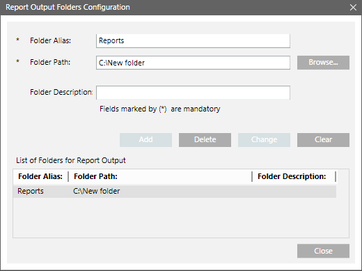

File Destination Type

Report Output Folders Configuration Components | |
Field | Description |
Folder Alias | Displays the name of the destination folder. When you select File in the Destination Type field, this name will be displayed in the File drop-down list of the Destination list of the Report Output Definition dialog box. |
Folder Path | Displays the folder path that you have selected using the Browse button. You can configure a maximum of 100 folder paths. An error message displays if the number of folder path exceeds 100. |
Browse | Helps you to locate the destination folder. You can also create a new folder at a desired location. |
Folder Description | (Optional) Describes the contents of a folder. |
Add | Adds the Folder Alias, Folder Path, and Folder Description in the List of folders for Report Output. This button is unavailable until all the mandatory fields are filled. |
List of Folders for Report Output | Displays list of configured output folders. On selecting a configured output folder, the Folder Alias, Folder Path, and Folder Description fields are populated. |
Change | Modifies an existing output folder configuration in the list. |
Delete | Deletes a selected entry from the list. This button remains unavailable until an output folder is selected in the List of Folders for Report Output. If you try to delete an entry which is used in any other Report Definition, a confirmation message displays. |
Clear | Clears all the fields that are populated when you select an output folder entry in the List of Folders for Report Output. |